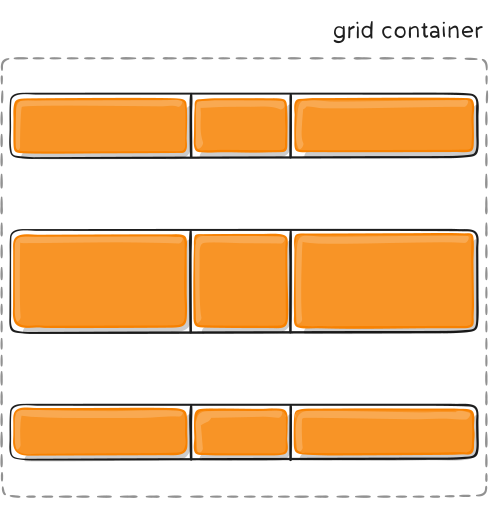

Introduction
CSS Grid Layout (aka “Grid”), is a two-dimensional grid-based layout system that aims to do nothing less than completely change the way we design grid-based user interfaces. CSS has always been used to lay out our web pages, but it’s never done a very good job of it. First, we used tables, then floats, positioning and inline-block, but all of these methods were essentially hacks and left out a lot of important functionality (vertical centering, for instance). Flexbox helped out, but it’s intended for simpler one-dimensional layouts, not complex two-dimensional ones (Flexbox and Grid actually work very well together). Grid is the very first CSS module created specifically to solve the layout problems we’ve all been hacking our way around for as long as we’ve been making websites.
There are two primary things that inspired me to create this guide. The first is Rachel Andrew’s awesome book, Get Ready for CSS Grid Layout. It’s a thorough, clear introduction to Grid and is the basis of this entire article. I highly encourage you to buy it and read it. My other big inspiration is Chris Coyier’s “A Complete Guide to Flexbox” which has been my go-to resource for everything flexbox. It’s helped a ton of people, evident by the fact that it’s the top result when you Google “flexbox.” You’ll notice many similarities between his post and mine, because why not steal from the best?
My intention with this guide is to present the Grid concepts as they exist in the very latest version of the specification. So I won’t be covering the out of date Internet Explorer syntax, and I’ll do my best to update this guide regularly as the spec matures.
Grid Properties
Properties for the Parent (Grid Container)
display
Defines the element as a grid container and establishes a new grid formatting context for its contents.
Values:
- grid – generates a block-level grid
- inline-grid – generates an inline-level grid
.container {
display: grid | inline-grid;
}
Note: The ability to pass grid parameters down through nested elements (aka subgrids) has been moved to level 2 of the CSS Grid specification. Here’s a quick explanation.
grid-template-columns grid-template-rows
Defines the columns and rows of the grid with a space-separated list of values. The values represent the track size, and the space between them represents the grid line.
Values:
- track-size – can be a length, a percentage, or a fraction of the free space in the grid (using the fr unit)
- line-name – an arbitrary name of your choosing
.container {
grid-template-columns: ... | ...;
grid-template-rows: ... | ...;
}
Examples:
When you leave an empty space between the track values, the grid lines are automatically assigned positive and negative numbers:
.container {
grid-template-columns: 40px 50px auto 50px 40px;
grid-template-rows: 25% 100px auto;
}

But you can choose to explicitly name the lines. Note the bracket syntax for the line names:
.container {
grid-template-columns: [first] 40px [line2] 50px [line3] auto [col4-start] 50px [five] 40px [end];
grid-template-rows: [row1-start] 25% [row1-end] 100px [third-line] auto [last-line];
}

Note that a line can have more than one name. For example, here the second line will have two names: row1-end and row2-start:
.container {
grid-template-rows: [row1-start] 25% [row1-end row2-start] 25% [row2-end];
}
If your definition contains repeating parts, you can use the repeat() notation to streamline things:
.container {
grid-template-columns: repeat(3, 20px [col-start]);
}
Which is equivalent to this:
.container {
grid-template-columns: 20px [col-start] 20px [col-start] 20px [col-start];
}
If multiple lines share the same name, they can be referenced by their line name and count.
.item {
grid-column-start: col-start 2;
}
The fr unit allows you to set the size of a track as a fraction of the free space of the grid container. For example, this will set each item to one third the width of the grid container:
.container {
grid-template-columns: 1fr 1fr 1fr;
}
The free space is calculated after any non-flexible items. In this example the total amount of free space available to the fr units doesn’t include the 50px:
.container {
grid-template-columns: 1fr 50px 1fr 1fr;
}
Special Functions and Keywords
- When sizing rows and columns, you can use all the lengths you are used to, like px, rem, %, etc, but you also have keywords like min-content, max-content, auto, and perhaps the most useful, fractional units. grid-template-columns: 200px 1fr 2fr min-content;
- You also have access to a function which can help set boundaries for otherwise flexible units. For example to set a column to be 1fr, but shrink no further than 200px: grid-template-columns: 1fr minmax(200px, 1fr);
- There is repeat() function, which saves some typing, like making 10 columns: grid-template-columns: repeat(10, 1fr);
- Combining all of these things can be extremely powerful, like grid-template-columns: repeat(auto-fill, minmax(200px, 1fr)); See the demo at the top of the page about “The Most Powerful Lines in Grid”.
Fluid Columns Snippet
Fluid width columns that break into more or less columns as space is available, with no media queries!
.grid {
display: grid;
grid-template-columns: repeat(auto-fill, minmax(200px, 1fr));
/* This is better for small screens, once min() is better supported */
/* grid-template-columns: repeat(auto-fill, minmax(min(200px, 100%), 1fr)); */
grid-gap: 1rem;
/* This is the standardized property now, but has slightly less support */
/* gap: 1rem */
}
grid-template-areas
Defines a grid template by referencing the names of the grid areas which are specified with the grid-area property. Repeating the name of a grid area causes the content to span those cells. A period signifies an empty cell. The syntax itself provides a visualization of the structure of the grid.
Values:
- – the name of a grid area specified with grid-area
- . – a period signifies an empty grid cell
- none – no grid areas are defined
.container {
grid-template-areas:
" | . | none | ..."
"...";
}
Example:
.item-a {
grid-area: header;
}
.item-b {
grid-area: main;
}
.item-c {
grid-area: sidebar;
}
.item-d {
grid-area: footer;
}
.container {
display: grid;
grid-template-columns: 50px 50px 50px 50px;
grid-template-rows: auto;
grid-template-areas:
"header header header header"
"main main . sidebar"
"footer footer footer footer";
}
That’ll create a grid that’s four columns wide by three rows tall. The entire top row will be composed of the header area. The middle row will be composed of two main areas, one empty cell, and one sidebar area. The last row is all footer.

Each row in your declaration needs to have the same number of cells.
You can use any number of adjacent periods to declare a single empty cell. As long as the periods have no spaces between them they represent a single cell.
Notice that you’re not naming lines with this syntax, just areas. When you use this syntax the lines on either end of the areas are actually getting named automatically. If the name of your grid area is foo, the name of the area’s starting row line and starting column line will be foo-start, and the name of its last row line and last column line will be foo-end. This means that some lines might have multiple names, such as the far left line in the above example, which will have three names: header-start, main-start, and footer-start.
grid-template
A shorthand for setting grid-template-rows, grid-template-columns, and grid-template-areas in a single declaration.
Values:
- none – sets all three properties to their initial values
- – sets grid-template-columns and grid-template-rows to the specified values, respectively, and sets grid-template-areas to none
.container {
grid-template: none | grid-template-rows / grid-template-columns;
}
It also accepts a more complex but quite handy syntax for specifying all three. Here’s an example:
.container {
grid-template:
[row1-start] "header header header" 25px [row1-end]
[row2-start] "footer footer footer" 25px [row2-end]
/ auto 50px auto;
}
That’s equivalent to this:
.container {
grid-template-rows: [row1-start] 25px [row1-end row2-start] 25px [row2-end];
grid-template-columns: auto 50px auto;
grid-template-areas:
"header header header"
"footer footer footer";
}
Since grid-template doesn’t reset the implicit grid properties (grid-auto-columns, grid-auto-rows, and grid-auto-flow), which is probably what you want to do in most cases, it’s recommended to use the grid property instead of grid-template.
column-gap row-gap grid-column-gap grid-row-gap
Specifies the size of the grid lines. You can think of it like setting the width of the gutters between the columns/rows.
Values:
- – a length value
.container {
/* standard */
column-gap: line-size;
row-gap: line-size;
/* old */
grid-column-gap: line-size;
grid-row-gap: line-size;
}
Example:
.container {
grid-template-columns: 100px 50px 100px;
grid-template-rows: 80px auto 80px;
column-gap: 10px;
row-gap: 15px;
}

The gutters are only created between the columns/rows, not on the outer edges.
Note: The grid- prefix will be removed and grid-column-gap and grid-row-gap renamed to column-gap and row-gap. The unprefixed properties are already supported in Chrome 68+, Safari 11.2 Release 50+ and Opera 54+.
gap grid-gap
A shorthand for row-gap and column-gap
Values:
- – length values
.container {
/* standard */
gap: grid-row-gap grid-column-gap;
/* old */
grid-gap: grid-row-gap grid-column-gap;
}
Example:
.container {
grid-template-columns: 100px 50px 100px;
grid-template-rows: 80px auto 80px;
gap: 15px 10px;
}
If no row-gap is specified, it’s set to the same value as column-gap
Note: The grid- prefix is deprecated (but who knows, may never actually be removed from browsers). Essentially grid-gap renamed to gap. The unprefixed property is already supported in Chrome 68+, Safari 11.2 Release 50+, and Opera 54+.
justify-items
Aligns grid items along the inline (row) axis (as opposed to align-items which aligns along the block (column) axis). This value applies to all grid items inside the container.
Values:
- start – aligns items to be flush with the start edge of their cell
- end – aligns items to be flush with the end edge of their cell
- center – aligns items in the center of their cell
- stretch – fills the whole width of the cell (this is the default)
.container {
justify-items: start | end | center | stretch;
}
Examples:
.container {
justify-items: start;
}

.container {
justify-items: end;
}

.container {
justify-items: center;
}

.container {
justify-items: stretch;
}

This behavior can also be set on individual grid items via the justify-self property.
align-items
Aligns grid items along the block (column) axis (as opposed to justify-items which aligns along the inline (row) axis). This value applies to all grid items inside the container.
Values:
- start – aligns items to be flush with the start edge of their cell
- end – aligns items to be flush with the end edge of their cell
- center – aligns items in the center of their cell
- stretch – fills the whole height of the cell (this is the default)
.container {
align-items: start | end | center | stretch;
}
Examples:
.container {
align-items: start;
}

.container {
align-items: end;
}

.container {
align-items: center;
}

.container {
align-items: stretch;
}

This behavior can also be set on individual grid items via the align-self property.
place-items
place-items sets both the align-items and justify-items properties in a single declaration.
Values:
- align-items / justify-items – The first value sets align-items, the second value justify-items. If the second value is omitted, the first value is assigned to both properties.
All major browsers except Edge support the place-items shorthand property.
For more details, see align-items and justify-items.
justify-content
Sometimes the total size of your grid might be less than the size of its grid container. This could happen if all of your grid items are sized with non-flexible units like px. In this case you can set the alignment of the grid within the grid container. This property aligns the grid along the inline (row) axis (as opposed to align-content which aligns the grid along the block (column) axis).
Values:
- start – aligns the grid to be flush with the start edge of the grid container
- end – aligns the grid to be flush with the end edge of the grid container
- center – aligns the grid in the center of the grid container
- stretch – resizes the grid items to allow the grid to fill the full width of the grid containe
- space-around - places an even amount of space between each grid item, with half-sized spaces on the far ends
- space-between – places an even amount of space between each grid item, with no space at the far ends
- space-evenly – places an even amount of space between each grid item, including the far ends
.container {
justify-content: start | end | center | stretch | space-around | space-between | space-evenly;
}
Examples:
.container {
justify-content: start;
}

.container {
justify-content: end;
}

.container {
justify-content: center;
}

.container {
justify-content: stretch;
}

.container {
justify-content: space-around;
}

.container {
justify-content: space-between;
}

.container {
justify-content: space-evenly;
}

align-content
Sometimes the total size of your grid might be less than the size of its grid container. This could happen if all of your grid items are sized with non-flexible units like px. In this case you can set the alignment of the grid within the grid container. This property aligns the grid along the block (column) axis (as opposed to justify-content which aligns the grid along the inline (row) axis).
Values:
- start – aligns the grid to be flush with the start edge of the grid container
- end – aligns the grid to be flush with the end edge of the grid container
- center – aligns the grid in the center of the grid container
- stretch – resizes the grid items to allow the grid to fill the full height of the grid container
- space-around – places an even amount of space between each grid item, with half-sized spaces on the far ends
- space-between – places an even amount of space between each grid item, with no space at the far ends
- space-evenly – places an even amount of space between each grid item, including the far ends
.container {
align-content: start | end | center | stretch | space-around | space-between | space-evenly;
}
Examples:
.container {
align-content: start;
}

.container {
align-content: end;
}

.container {
align-content: center;
}

.container {
align-content: stretch;
}

.container {
align-content: space-around;
}

.container {
align-content: space-between;
}

.container {
align-content: space-evenly;
}

place-content
place-content sets both the align-content and justify-content properties in a single declaration.
Values:
- align-content / justify-content – The first value sets align-content, the second value justify-content. If the second value is omitted, the first value is assigned to both properties.
All major browsers except Edge support the place-content shorthand property.
For more details, see align-content and justify-content.
grid-auto-columns grid-auto-rows
Specifies the size of any auto-generated grid tracks (aka implicit grid tracks). Implicit tracks get created when there are more grid items than cells in the grid or when a grid item is placed outside of the explicit grid. (see The Difference Between Explicit and Implicit Grids)
Values:
- track-size – can be a length, a percentage, or a fraction of the free space in the grid (using the fr unit)
.container {
grid-auto-columns: track-size ...;
grid-auto-rows: track-size ...;
}
To illustrate how implicit grid tracks get created, think about this:
.container {
grid-template-columns: 60px 60px;
grid-template-rows: 90px 90px;
}

This creates a 2 x 2 grid.
But now imagine you use grid-column and grid-row to position your grid items like this:
.item-a {
grid-column: 1 / 2;
grid-row: 2 / 3;
}
.item-b {
grid-column: 5 / 6;
grid-row: 2 / 3;
}

We told .item-b to start on column line 5 and end at column line 6, but we never defined a column line 5 or 6. Because we referenced lines that don’t exist, implicit tracks with widths of 0 are created to fill in the gaps. We can use grid-auto-columns and grid-auto-rows to specify the widths of these implicit tracks:
.container {
grid-auto-columns: 60px;
}

grid-auto-flow
If you have grid items that you don’t explicitly place on the grid, the auto-placement algorithm kicks in to automatically place the items. This property controls how the auto-placement algorithm works.
Values:
- row – tells the auto-placement algorithm to fill in each row in turn, adding new rows as necessary (default)
- column – tells the auto-placement algorithm to fill in each column in turn, adding new columns as necessary
- dense – tells the auto-placement algorithm to attempt to fill in holes earlier in the grid if smaller items come up later
.container {
grid-auto-flow: row | column | row dense | column dense;
}
Note that dense only changes the visual order of your items and might cause them to appear out of order, which is bad for accessibility.
Examples:
.container {
display: grid;
grid-template-columns: 60px 60px 60px 60px 60px;
grid-template-rows: 30px 30px;
grid-auto-flow: row;
}
When placing the items on the grid, you only specify spots for two of them:
.item-a {
grid-column: 1;
grid-row: 1 / 3;
}
.item-e {
grid-column: 5;
grid-row: 1 / 3;
}
Because we set grid-auto-flow to row, our grid will look like this. Notice how the three items we didn’t place (item-b, item-c and item-d) flow across the available rows:

If we instead set grid-auto-flow to column, item-b, item-c and item-d flow down the columns:
.container {
display: grid;
grid-template-columns: 60px 60px 60px 60px 60px;
grid-template-rows: 30px 30px;
grid-auto-flow: column;
}

grid
A shorthand for setting all of the following properties in a single declaration: grid-template-rows, grid-template-columns, grid-template-areas, grid-auto-rows, grid-auto-columns, and grid-auto-flow (Note: You can only specify the explicit or the implicit grid properties in a single grid declaration).
Values:
- none – sets all sub-properties to their initial values.
- grid-template-rows / [ auto-flow && dense? ] grid-auto-columns? – sets grid-template-rows to the specified value. If the auto-flow keyword is to the right of the slash, it sets grid-auto-flow to column. If the dense keyword is specified additionally, the auto-placement algorithm uses a “dense” packing algorithm. If grid-auto-columns is omitted, it is set to auto.
- auto-flow && dense? grid-auto-rows? / grid-template-columns – sets grid-template-columns to the specified value. If the auto-flow keyword is to the left of the slash, it sets grid-auto-flow to row. If the dense keyword is specified additionally, the auto-placement algorithm uses a “dense” packing algorithm. If grid-auto-rows is omitted, it is set to auto.
Examples:
The following two code blocks are equivalent:
.container {
grid: 100px 300px / 3fr 1fr;
}
.container {
grid-template-rows: 100px 300px;
grid-template-columns: 3fr 1fr;
}
The following two code blocks are equivalent:
.container {
grid: auto-flow / 200px 1fr;
}
.container {
grid-auto-flow: row;
grid-template-columns: 200px 1fr;
}
The following two code blocks are equivalent:
.container {
grid: auto-flow dense 100px / 1fr 2fr;
}
.container {
grid-auto-flow: row dense;
grid-auto-rows: 100px;
grid-template-columns: 1fr 2fr;
}
And the following two code blocks are equivalent:
.container {
grid: 100px 300px / auto-flow 200px;
}
.container {
grid-template-rows: 100px 300px;
grid-auto-flow: column;
grid-auto-columns: 200px;
}
It also accepts a more complex but quite handy syntax for setting everything at once. You specify grid-template-areas, grid-template-rows and grid-template-columns, and all the other sub-properties are set to their initial values. What you’re doing is specifying the line names and track sizes inline with their respective grid areas. This is easiest to describe with an example:
.container {
grid: [row1-start] "header header header" 1fr [row1-end]
[row2-start] "footer footer footer" 25px [row2-end]
/ auto 50px auto;
}
That’s equivalent to this:
.container {
grid-template-areas:
"header header header"
"footer footer footer";
grid-template-rows: [row1-start] 1fr [row1-end row2-start] 25px [row2-end];
grid-template-columns: auto 50px auto;
}
Reference
All the documentation in this page is taken from CSS Tricks